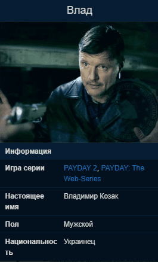

Влад
Этот этнический украинец был известен властям какое-то время. В свое время работал в русской мафии (особенно в Донецке/Ростовская область), он хорошо известен своей склонностью к насилию.
Влад принимал участие во многих преступных предприятиях, включая торговлю оружием, проституцию, вымогательство и контрабанду наркотиков, хотя он проявляет сильные предпринимательские тенденции и может участвовать в огромном количестве рэкетов.
Влад обычно предлагает контракты, которые проявляют его вкус к насилию, желание отомстить тем, кто его обидел или не уважал, а также жестокую, высокооплачиваемую работу.
Описание

Впервые фигурирует во втором эпизоде PAYDAY: The Web-Series. Украинский мафиози и важный работодатель. Имеет высокий криминальный авторитет.
Некоторое время отбыл в русской мафии (особенно в области Донецка/Ростова), хорошо известен за склонность к насилию.
До событий PAYDAY 2 был известным преступником в Вашингтоне, имел большие связи в русской мафии, но был предан своим другом - Дмитрием и попал в тюрьму на восемь лет. К событиям PAYDAY 2, Влад только выходит из тюрьмы, планируя восстановить свой криминальный авторитет и отомстить за предательство.
Влад является главой безопасности ночного клуба Чарли Бертрама. Пока неизвестно, владеет ли он клубом после убийства Чарли.
Влад был вовлечен во многие преступные предприятия, в т.ч продажу оружия, сутенерство, вымогательства и контрабанду наркотиков, хотя он проявляет сильные предпринимательские качества и может быть вовлечен в любое количество рэкетов. Он был обвинен в сутенёрстве и преступном сговоре и, если снова будет осужден, то в конечном итоге сядет в тюрьму на двадцать пять лет. Для раскрытия махинаций Влада были отправлены многие агенты ФБР.
Имеет довольно сложный и непредсказуемый характер: когда нанимает команду, то укрывает от них некоторую важную информацию, касательно охраны и уровня защиты того места, куда он посылает команду: молчит о членах русской мафии в ночном клубе, не упоминает о присутствии камер слежения и охранников на рэкете четырёх магазинов.
Поставляет команде программы для взлома российского производства, на качество которых Бэйн жалуется во время прохождения дня выборов (варианта Б).
Влад, как правило, предлагает контракты, которые осуществляют его вкус к насилию, стремлению мести тем, кто его обидел или не уважают его.
Продолжительное время тайно работал на Катару и Murkywater (компания), но предал их тайно вернув Бриллиант банде в кексах.
осле роспуска банды PAYDAY, вероятно, уехал на Кубу (секретная, хорошая концовка).
Заказывает ограбления
- Четыре магазина
- Ночной клуб
- Крушитель
- Украинское дело
- Снежное рождество
- Ядерная угроза
- Последствия
- Мастерская Санты
- Goat Simulator
- Украденное Рождество